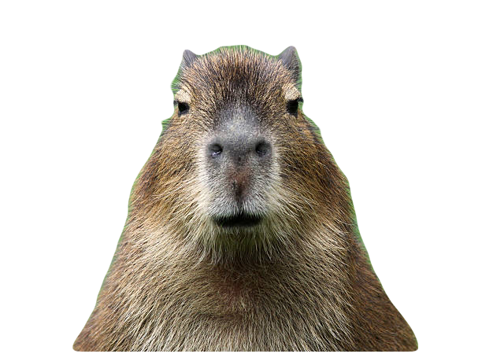

About Me
As a devoted capybara enthusiast, I find myself captivated by these remarkable creatures. With their endearing charm and gentle nature, capybaras possess an inherent allure that is simply irresistible. Their lovable appearance, characterized by their large round eyes, cute button noses, and adorable webbed feet, evokes a sense of warmth and tenderness. These remarkable rodents are also renowned for their sociable behavior, as they thrive in communal settings and form strong bonds with their companions. Observing capybaras in their natural habitat, frolicking in the water or basking in the sun, fills me with immense joy and tranquility. The serenity and contentment they exude serve as a reminder of the simple pleasures in life. Being a capybara lover has allowed me to appreciate the beauty of nature and embrace the harmonious coexistence between humans and these delightful creatures. This website contain loads of capybaras as well as a pop-able capy.
Collection of Capybaras
(Credits to all image owners)


Pop a Capybara
your progress is always saved through cookies ;)
Pop Me!
